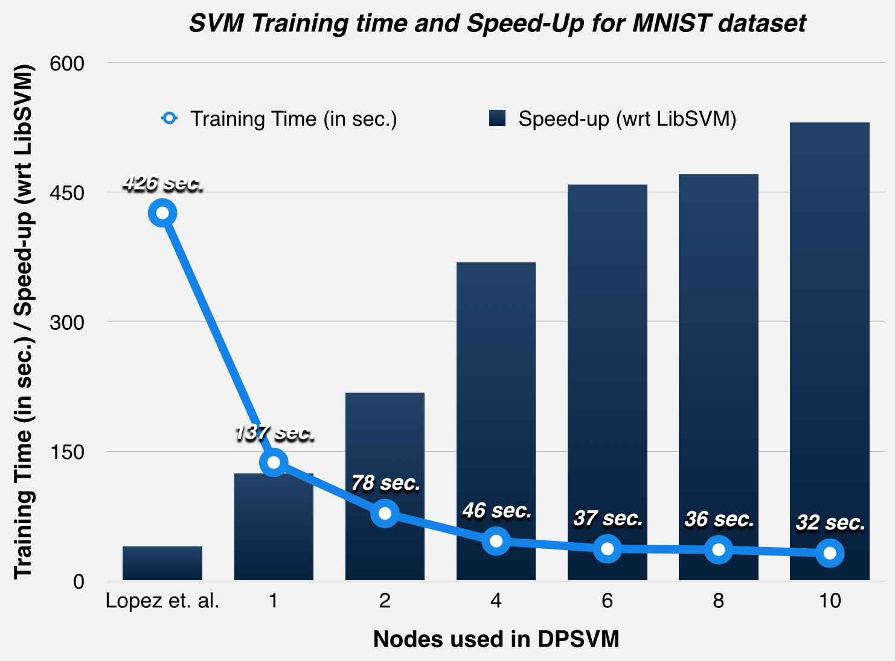
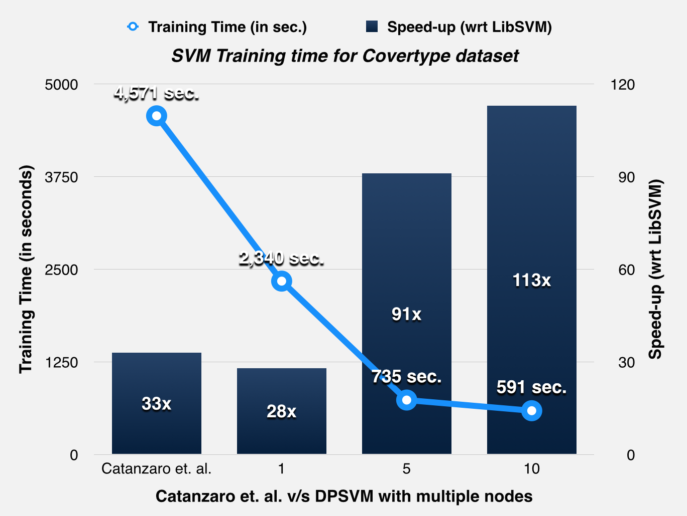

Summary
We have implemented a distributed and parallel Support Vector Machine training algorithm for binary classification using the OpenMPI library and the CUDA parallel programming model. We parallelize the modified Sequential Minimal Optimization algorithm used by popular tools like LIBSVM, and distribute the parallelism over GPUs in a cluster.
Background
The Support Vector Machine (SVM) is a widely used supervised machine learning algorithm, which is essentially a discriminative classifier used for linear and nonlinear classification tasks. The training of an SVM is a Quadratic Programming (QP) optimization problem, where the primal is converted to its dual form. Platt originally proposed the SMO technique for solving the dual QP problem, by breaking it down to a series of smallest possible QP problems.
The SMO technique iteratively solves for a target function, by updating the Lagrangian multipliers and the error terms over the entire training dataset. Each update step involves the computation of the modified inner products of two training data input vectors (the kernel trick), which is computationally intensive over the set of all training data. We aim to implement a parallel SMO algorithm which distributes the task of training over different nodes as proposed by Cao et. al. [1], and extend it to multiple GPU devices based on Herrero-Lopez et. al.'s [2] methodology.
The parallel calculation of error terms and updates of the Lagrangian multipliers will (ideally) scale with the number of sub processes, and allow for the use of parallel reduction with low communication overheads for global constants. We are using OpenMPI and CUDA to create a portable, high-performance implementation that leverages distributed environments.

Challenges
The aspect of the problem that is most challenging is parallelizing the kernel computations in a way that minimizes communication overheads between:
-
Nodes in the cluster
-
GPU and CPU
For a single GPU implementation of a parallel SVM algorithm, [2] profiles time spent on communication versus computation on various training datasets. The following trends were noted:
-
Datasets with a large number of features per sample and a large number of samples spent most of the GPU time on computation (the kernel computation, which is a SGEMV matrix operation).
-
Datasets with a relatively smaller number of features and samples were seen to spend up to 33% of GPU time on communication, during reductions and updates across GPU tasks.
Since we are are shifting this to a distributed environment, we would expect to see the communication-to-computation overhead increase. However, there exist even more complex datasets [3] that we expect to exhibit low ratios in our distributed environment as well.
Results
We have currently implemented a version, which distributes the training over multiple GPUs using OpenMPI. This version has been profiled with popular datasets such as MNIST and Forest Covertype (Asuncion & Newman, 2007), which require a large no. of iterations to converge.


Goals and Deliverables
CURRENT STATUS:
-
An OpenMPI and CUDA based, distributed, parallel SVM training implementation.
-
Benchmark this implementation against the standard LibSVM implementation.
-
Achieved the following training speedups over LibSVM:
|
Setup vs. Dataset |
Adult |
MNIST (Even vs Odd) |
Covertype |
|
REFERENCE: Speedup achieved using single Tesla C1060 [2] |
10.45x |
32.79x |
- |
|
REFERENCE: Speedup achieved using chunking algorithm and threeTesla C1060s and one Intel Xeon E5426 2.8GHz quad-core CPU. [3] |
19.38x |
129.64x |
Too large for LibSVM, Runtime: 651s |
|
RESULT: Our Implementation on LATEDAYS (1 Tesla K40 on every node) |
24x |
124x (1 GPU) - 531x (10 GPUs) |
591 sec. (1 GPU) |
Hope to achieve (by 11 May):
-
Profiling against Spark LIBLINEAR or MPI LIBLINEAR, [4]
-
Extend the implementation to parallelize testing phase.
Platform Choice
We use the OpenMPI library and the CUDA parallel programming model on the latedays cluster. As mentioned above, this would allow us to create a portable implementation of our distributed SVM along with a high-performance GP-GPU pipeline targeted at latedays. The GPUs used are a Tesla K40 each on every node in the cluster.
Bibliography
[1] Cao, Li Juan, et al. "Parallel sequential minimal optimization for the training of support vector machines." Neural Networks, IEEE Transactions on 17.4 (2006): 1039-1049.
[2] Herrero-Lopez, Sergio, John R. Williams, and Abel Sanchez. "Parallel multiclass classification using SVMs on GPUs." Proceedings of the 3rd Workshop on General-Purpose Computation on Graphics Processing Units. ACM, 2010.
[3] Li, Qi, et al. "Parallel multitask cross validation for Support Vector Machine using GPU." Journal of Parallel and Distributed Computing 73.3 (2013): 293-302.
[4] http://www.csie.ntu.edu.tw/~cjlin/libsvmtools/distributed-liblinear/